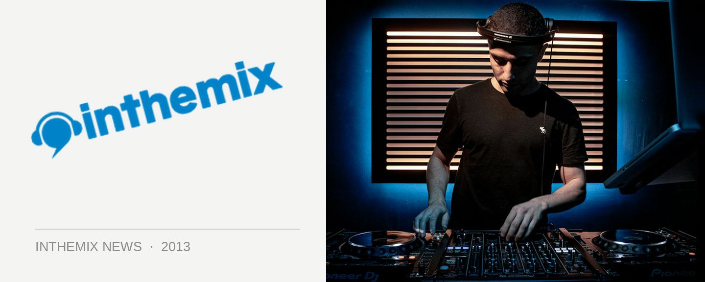

Listen: Corsten and Schulz storm in with first New World Punx set
Trance vets Ferry Corsten and Markus Schulz made a thrilling proposition last month when they announced they’d be uniting for a ‘dream team’ project labelled the New World Punx. The duo hit the stage over the weekend for a booming debut to a sold-out crowd at Armin van Buuren’s A State of Trance 600 show at NYC’s Madison Square Garden.
Corsten and Schulz had already promised and “harder, driving and more aggressive” sound that would be “tighter and more dynamic” than what we’d normally expect from the pair, and they come out firing on all cylinders with a 90-minute set full of tough, tech-injected melodic energy. While there were still melodic riffs aplenty, they were bounced off some trance aggression, techno percussion and bass drills.
Kicking off with a fresh slab of New World Punx via a new track Romper, it was a fitting prelude to a set that was crammed with never-heard-before bootlegs, remixes and mash-ups from the pair, demonstrating they’ve definitely built up a healthy and prolific workflow in the studio in a short space of time. The track that inspired the union in the first place, Loops & Tings, got an airing early on, as well as a ‘bootleg mix’ of the Binary Finary classic 1998.
The tough, techy vibes reached a climax with KhoMha’s Hydra, before Dimitri Vegas & Like Mike’s fresh remix of Corsten’s classic Rock Your Body Rock got a run. This led straight into a stadium-suited New World Punx mash-up, splicing Corsten’s track with Aruna from last year, Live Forever, with Dimitri Vegas, Moguai & Like Mike’s main-room anthem Mammoth.
The New World Punx steered their set into its business end in a rather dramatic fashion, via new remixes of the two tracks that inspired their name: an epic remix of Corsten’s classic Punk, titled The Digital Punks Of Gotham, as well a 2013 mix of Schulz’s The New World.
Not surprisingly, the set stirred up all sorts of fervor online after the broadcast on the weekend. Check out the SoundCloud link to get an idea of what went down in Madison Square Garden.